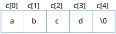

In this article, you'll learn to handle strings and its operations in C programming. You'll learn to declare them, initialize them and use them for various I/O operations.
In C programming, a string is an array of characters terminated with a null character \0. For example:
"c string"
When compiler encounters a sequence of characters enclosed in the double quotation marks, it appends a null character \0 at the end.
Before you can work with strings, you need to declare them first. Since string is an array of characters. You declare strings in a similar way like you do with arrays.
If you don't know what arrays are, we recommend you to check C arrays.
Here's how you declare a string:
char s[5];
You can initialize strings in a number of ways.
char c[] = "abcd";
char c[50] = "abcd";
char c[] = {'a', 'b', 'c', 'd', '\0'};
char c[5] = {'a', 'b', 'c', 'd', '\0'};

You can use the scanf() function to read a string.
The scanf() function reads the sequence of characters until it encounters a whitespace(space, newline, tab etc.).
#include <stdio.h>
int main()
{
char name[20];
printf("Enter name: ");
scanf("%s", name);
printf("Your name is %s.", name);
return 0;
}
Output
Enter name: Dennis Ritchie
Your name is Dennis.
Even though Dennis Ritchie was entered in the above program, only "Ritchie" was stored in the name string. It's because there was a space after Ritche.
You can use gets() function to read a line of string. And, you can use puts() to display the string.
#include <stdio.h>
int main()
{
char name[30];
printf("Enter name: ");
gets(name); // read string
printf("Name: ");
puts(name); // display string
return 0;
}
When you run the program, the output will be:
Enter name: Tom Hanks
Name: Tom Hanks
#include <stdio.h>
void displayString(char str[]);
int main()
{
char str[50];
printf("Enter string: ");
gets(str);
displayString(str); // Passing string to a function.
return 0;
}
void displayString(char str[])
{
printf("String Output: ");
puts(str);
}
Similar like arrays, string names are "decayed" to pointers. Hence, you can use pointer with the same name as string to manipulate elements of the string.
#include <stdio.h>
int main(void)
{
char name[] = "Harry Potter";
printf("%c", *name); // Output: H
printf("%c", *(name+1)); // Output: a
printf("%c", *(name+7)); // Output: o
char *namePtr;
namePtr = name;
printf("%c", *namePtr); // Output: H
printf("%c", *(namePtr+1)); // Output: a
printf("%c", *(namePtr+7)); // Output: o
}